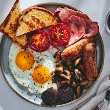

Classic Fried Food

Description
This should be called a heart attack on a plate! While certainly most dietitians wouldn't reccomend this dish it is perfectly fine in moderation and is guarenteed to taste nice
Ingredients
- 3 beef saussages from your local butcher or butchers in quality supermarket
- 4 slices of bacon
- 2 Free range eggs or your local store best quality variety
- 4 slices of brown bread either buttered or toasted then buttered
Steps
- Add
your local heart attack oil variety to a frying pan.Pre-heat the frying pan for 3/5 minutes.
- When you can hear or see the oil crackiling get ready to add most of the goods.Now add the saussages and bacon
- Turn over regularly to ensure an even cook and cook in total for 10-15 minutes
- Add the eggs and cook to your desired time and consistency
- Then serve with brown bread and beverage on your choice, enjoy!
Home